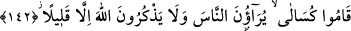

Mâsivâya ünsiyet eden kimse, O’na yabancı kalacaktır. Allah’tan başkasını anan,
O’ndan gafil olur. Allah’dan başkasına güvenip de ondan medet uman müşriktir. Allah’a
giden yola ulaşamaz ve O’nun himayesinden mahrum kalır.
Şiirde ne güzel ifade edilmiştir:
Sen ilâhî sırlara mahrem olmadığından mahrumsun
Mahrem olmayanları ilâhî harem dairesine sokmazlar
142- Şüphesiz münâfıklar Allah’a oyun etmeye kalkışıyorlar; halbuki Allah
onların oyunlarını başlarına çevirmektedir. Onlar namaza kalktıkları zaman
üşenerek kalkarlar, insanlara gösteriş yaparlar, Allah’ı da pek az zikrederler.
“Şüphesiz münâfıklar” içlerindeki küfrü gizleyip mü’min olduklarını açıklayarak
“Allah’a oyun etmeye kalkışıyorlar; halbuki Allah onların oyunlarını başlarına
çevirmektedir.” Allah, münâfıklar hakkında oyun yapmada üstün olanın yaptığını yapar.
Şöyle ki dünyâda onları kendi hallerine bırakır. Canlarına ve mallarına dokunulmaz.
Âhirette ise onlar için ateşin en aşağı tabakasını hazırlamıştır. Cenab-ı Hak onların
başına bir rezillik, sıkıntı, felâket, korku ve suç getirmez. Taşkınlıklarını ifşâ etmez.
Onları hemen cezâlandırmaz. Münâfıklar buna aldanarak günah işlemeye dalarlar.
İbn Abbas (r. anhümâ)’ın şöyle dediği rivâyet edilir: “Kıyâmet günü mü’minlere nur
verildiği gibi münâfıklara da verilir. Mü’minler, alınlarında parıldayan nur ile sıratı
geçerler. Bu esnâda münâfıkların nûru söner. Bunun üzerine münâfıklar mü’minlere:
“Bizi bekleyin, nurûnuzdan istifade edelim” deyince, sıratta bulunan melekler onlara
nidâ ederek: “Haydi, arkanıza dönün de bir nur arayın.” derler. İşte o zaman, geriye
dönüşün asla mümkün olmadığını bileceklerdir. İbn Abbas (r. anhümâ) devamla şöyle
dedi: “O gün mü’minler de alınlarında parıldayan nûrun sönmesinden endişeye
kapılarak şöyle niyaz ederler: “Rabbimiz, nurumuzu tamamla, bizi bağışla. Çünkü
sen her şeye kadirsin.” (Tahrîm, 66/8)
“Onlar namaza kalktıklarında üşenerek kalkarlar.” Gönül hoşluğuyla, isteyerek
değil de zorla iş yapan kimse gibi namazda ağır davranırlar ve geriden gelirler.
“İnsanlara gösteriş yaparlar.” Kendilerinin mü’min zannedilmesi için namazlarını
görülsün (riyâ) ve duyulsun (süm’a) diye kılarlar.
“Allah’ı da pek az zikrederler.” Burada “zikr”den murad, tesbih ve tehlildir. Çünkü
riyâkar amelini ancak gösteriş yapacağı kimsenin huzûrunda yapar. Bu da az olur.
Keşşaf’da şöyle denilmiştir: Müslüman görünen nice insanlar vardır ki onlarla
günlerce ve gecelerce berâber olsan onlardan ne bir tehlil, ne de bir tesbih işitirsin.